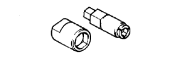

GENERATOR > REASSEMBLY > Preparation

|  | 09820-63011 | Alternator Pulley Set Nut Wrench Set |
| (09820-06010) | Alternator Rotor Shaft Wrench | |
| (09820-06021) | Alternator Pulley Set Nut Wrench | |
 | 09950-60010 | Replacer Set |
 | (09951-00500) | Replacer 50 |
 | 09950-70010 | Handle Set |
 | (09951-07100) | Handle 100 |
| Pin (φ 1.0 mm) | - |
| Service wire harness | - |
| Torque wrench | - |
| Vernier caliper | - |
 | 09082-00040 | TOYOTA Electrical Tester | - |
 | (09083-00150) | Test Lead Set | - |